Schrift an der Fassade
Gasthausnamen, Hausnummern, Straßennamen — im Stil, der zum Gebäude passt.
Was eine Klebefolie nicht kann.
Straßennamen, Wirtshausschilder, Firmen- und Vereinslogos: Wir malen und lackieren sie von Hand. An Fassaden, in Innenräumen oder auf Schildern.
Das können heute nur noch wenige Betriebe. Gelernt hat es Dieter Müller von seinem Vater, der den Betrieb 1976 gegründet hat — vom Brauereigasthof über das Feuerwehrhaus bis zur Hüttentafel des Alpenvereins.
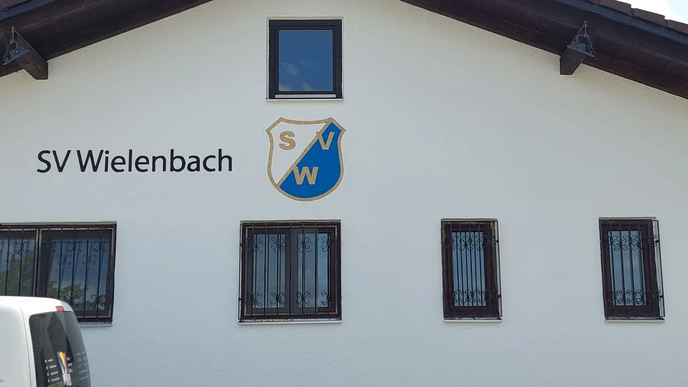
Gasthausnamen, Hausnummern, Straßennamen — im Stil, der zum Gebäude passt.
Vereinswappen und Firmenzeichen, aufgemalt statt aufgeklebt.
Einzelstücke, die in der Werkstatt entstehen und danach montiert werden.
Verwitterte Schrift setzen wir nach, statt sie zu ersetzen.
In der Gaststube genauso wie auf dem Giebel.
Sie sehen Schrift, Größe und Platzierung, bevor der erste Strich sitzt.
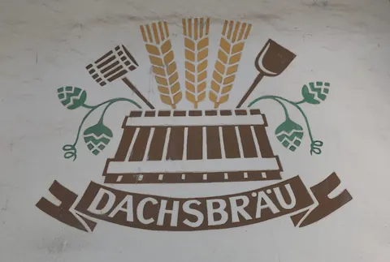
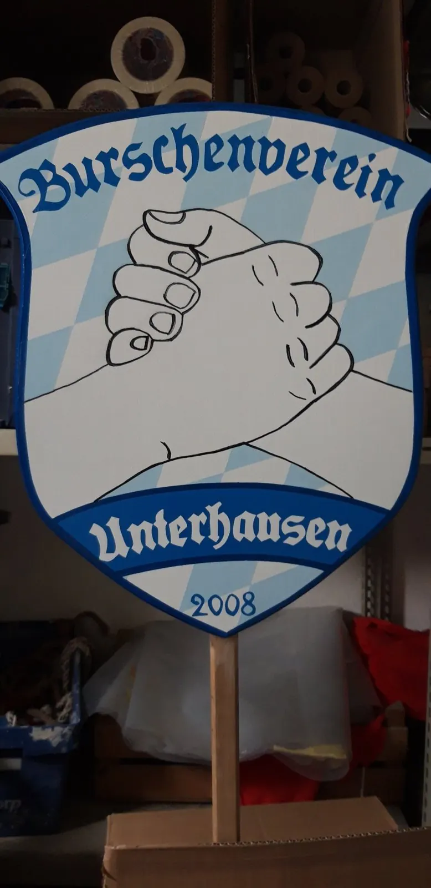
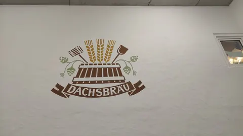


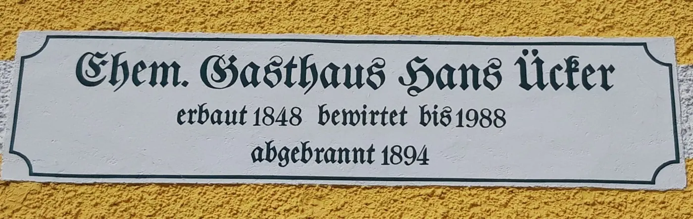
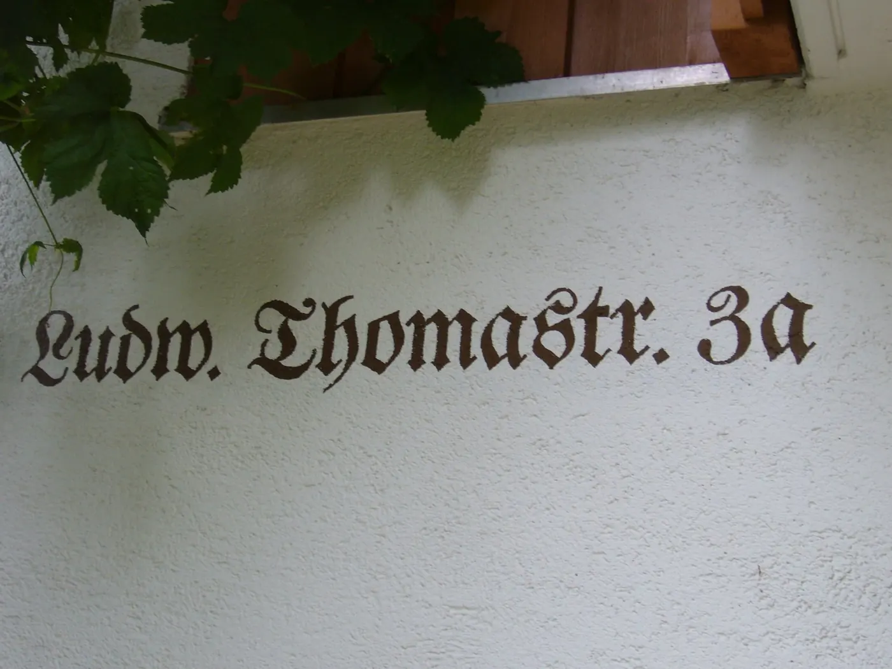
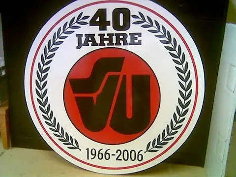
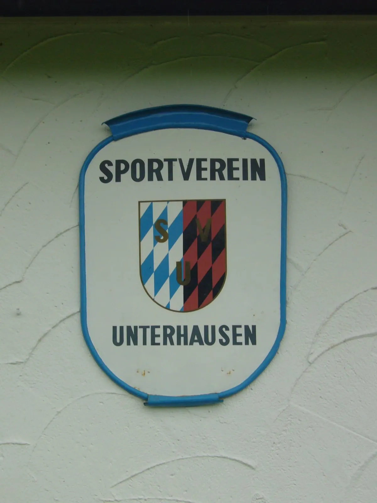
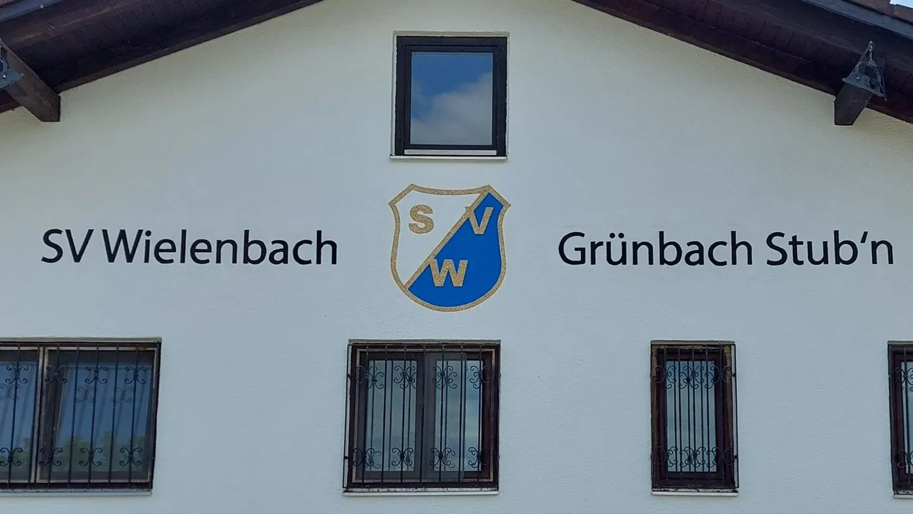
Was Kunden zum Thema Beschriftungen am häufigsten wissen wollen.
Ihre Frage steht nicht dabei? Rufen Sie an — wir sind selbst am Telefon.
0881 4667 anrufenFolie hat Ränder, die sich lösen, und altert anders als der Putz darunter. Gemalte Schrift verwittert mit dem Gebäude und lässt sich jederzeit nachziehen.
Ja — Tafeln und Schilder entstehen in der Werkstatt und werden danach montiert.
Ja. Wir übertragen es maßstabsgerecht auf die Fläche; vorher sehen Sie den Entwurf.
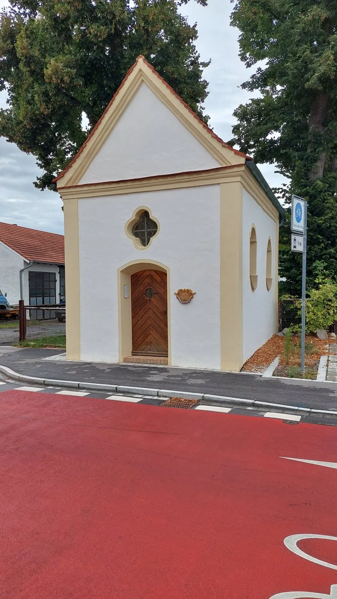
FassadengestaltungFarbe, die zum Haus passt — nicht zum Katalog.Mehr erfahren HolzschutzanstricheDamit Balkon, Fenster und Vordach die nächsten Winter überstehen.Mehr erfahren
HolzschutzanstricheDamit Balkon, Fenster und Vordach die nächsten Winter überstehen.Mehr erfahren InnenraumgestaltungAm Abend ist der Raum wieder Ihrer.Mehr erfahren
InnenraumgestaltungAm Abend ist der Raum wieder Ihrer.Mehr erfahren TapezierarbeitenMan sieht es an den Stößen.Mehr erfahren
TapezierarbeitenMan sieht es an den Stößen.Mehr erfahren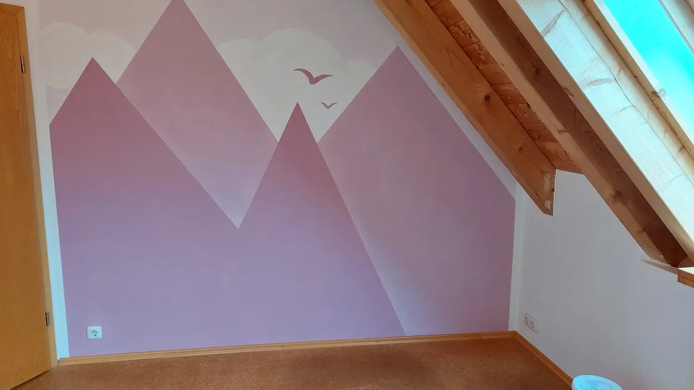
SonderarbeitenWenn es das von der Stange nicht gibt.Mehr erfahrenIhr ProjektNicht dabei? Wir schauen es uns trotzdem an — ein Anruf genügt.Projekt anfragen
Rufen Sie an oder schreiben Sie uns — wir schauen es uns vor Ort an.